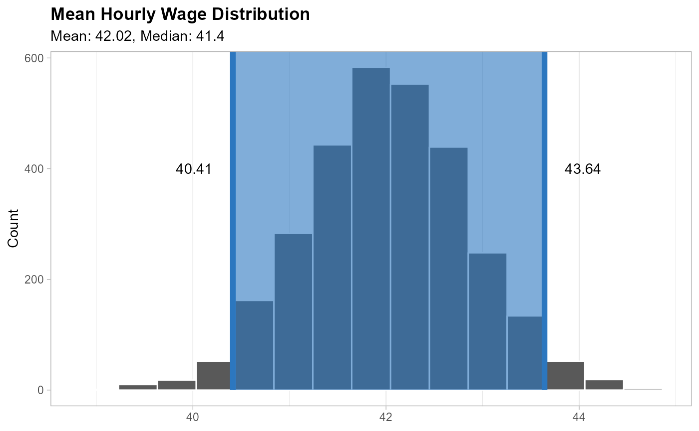

Business Understanding
Source:vignettes/articles/02-business-understanding.Rmd
02-business-understanding.RmdProblem Statement
The problem is that taxi drivers’ net earnings are not as high as they could be due to a lack of strategy for increasing tips.
Project Scope
This project will be limited to Juno, Uber, Via and Lyft taxi drivers who work in New York City.
Data to Use
In this project, we will use a subset of the data available in the TLC Trip Record Data from 2022 to 2023 for High Volume For-Hire Vehicle with the columns described below as describes the source data dictonary.
| Field Name | Description |
|---|---|
| hvfhs_license_num | The TLC license number of the HVFHS base or business.
As of September 2019, the HVFHS licensees are the following: - HV0002: Juno - HV0003: Uber - HV0004: Via - HV0005: Lyft |
| dispatching_base_num | The TLC Base License Number of the base that dispatched the trip |
| originating_base_num | Base number of the base that received the original trip request |
| request_datetime | Date/time when passenger requested to be picked up |
| on_scene_datetime | Date/time when driver arrived at the pick-up location (Accessible Vehicles-only) |
| pickup_datetime | The date and time of the trip pick-up |
| dropoff_datetime | The date and time of the trip drop-off |
| PULocationID | TLC Taxi Zone in which the trip began |
| DOLocationID | TLC Taxi Zone in which the trip ended |
| trip_miles | Total miles for passenger trip |
| trip_time | Total time in seconds for passenger trip |
| base_passenger_fare | Base passenger fare before tolls, tips, taxes, and fees |
| tolls | Total amount of all tolls paid in trip |
| bcf | Total amount collected in trip for Black Car Fund |
| sales_tax | Total amount collected in trip for NYS sales tax |
| congestion_surcharge | Total amount collected in trip for NYS congestion surcharge |
| airport_fee | $2.50 for both drop off and pick up at LaGuardia, Newark, and John F. Kennedy airports |
| tips | Total amount of tips received from passenger |
| driver_pay | Total driver pay (not including tolls or tips and net of commission, surcharges, or taxes) |
| shared_request_flag | Did the passenger agree to a shared/pooled ride, regardless of whether they were matched? (Y/N) |
| shared_match_flag | Did the passenger share the vehicle with another passenger who booked separately at any point during the trip? (Y/N) |
| access_a_ride_flag | Was the trip administered on behalf of the Metropolitan Transportation Authority (MTA)? (Y/N) |
| wav_request_flag | Did the passenger request a wheelchair-accessible vehicle (WAV)? (Y/N) |
| wav_match_flag | Did the trip occur in a wheelchair-accessible vehicle (WAV)? (Y/N) |
Based on the variables available, we can divide them in to 2 categories.
Available Before Arriving at the Pick-Up Location
They will be used as the predictors to train the model.
- request_datetime
- PULocationID
- DOLocationID
- hvfhs_license_num
- dispatching_base_num
- originating_base_num
- trip_miles
- base_passenger_fare
- shared_request_flag
- access_a_ride_flag
- wav_request_flag
- wav_match_flag
Project Objective
The objective of this project is to develop a strategy to select the best paid trips possible to get an consistent increase in NYC taxi drivers’ income.
Defining Business Metric
Based on the current information, we can say that our objective is to increase the Daily Hourly Wage received by each taxi driver defined by the following formula:
\[ \text{Daily Hourly Wage} = \frac{\text{Total Earnings}}{\text{Total Hours Worked}} \]
Defining Outcome to Predict
Once we have a clear business problem to solve, it’s important to also make the translation into a data science problem that we can solve using the available data.
As we want to increase earning and reduce time, we can use calculate
and predict the profit_rate of each trip, to understand
what is behind the best pay trips.
\[ \text{profit rate} = \frac{\text{driver pay} + \text{tips}}{\text{dropoff datetime}-\text{request datetime}} \]
Defining Metric’s Base Line
Defining the baseline based on this data is a challenge as the data doesn’t have any unique id to make the estimation, but we can run a simulation to estimate its value with a confident interval.
The simulation will be based on the following assumptions related to the taxi drivers:
- They can start to work from any zone of Manhattan, Brooklyn or Queens (the more active ones).
- They work from 8 to 12 hour every day.
- They can start to work in any month, weekday or hour.
- They just can take trips starting at the same zone they are after ending the their last trip
- The maximum waiting time before receiving a new trip request is 6 minutes.
- If a taxi driver cannot find a new trip in the first 6 minutes, he can to extend 6 minutes more and drive to the closest zone to find a new trip, but if that doesn’t work in the next 6 minutes he can drive to any zone in the current Borough.
Runing trips simulation
- Load the environment to use.
library(here)
library(scales)
library(ggplot2)
library(data.table)
library(lubridate)
library(dplyr)
library(arrow)
library(infer)
options(datatable.print.nrows = 15)- Create a connection with the parquet files without loading them into RAM.
NycTrips <- open_dataset(here("raw-data/trip-data"))
nrow(NycTrips) |> scales::comma() |> paste0(" rows")
#> [1] "444,906,103 rows"- Use the locations ids of all the trips we can estimate the mean distance between each pear of locations.
LocationsMeanDistance <-
NycTrips |>
group_by(PULocationID, DOLocationID) |>
summarize(trip_miles_mean = mean(trip_miles)) |>
collect() |>
as.data.table()
LocationsMeanDistance
#> PULocationID DOLocationID trip_miles_mean
#> <int> <int> <num>
#> 1: 17 225 1.425072
#> 2: 37 37 1.364529
#> 3: 225 21 10.125073
#> 4: 25 17 2.546591
#> 5: 49 79 4.344479
#> ---
#> 66201: 99 65 15.550000
#> 66202: 154 174 28.210000
#> 66203: 194 178 20.470000
#> 66204: 110 67 8.830000
#> 66205: 149 120 21.417000- Define a named vectors that can return the closest location id for all locations ids in the dataset.
ClosestZone <-
# We are bind the same table after exchanging the id columns
# to make sure that all ids are present in both column for any
# pair of ids
rbind(LocationsMeanDistance,
LocationsMeanDistance[, .(PULocationID = DOLocationID,
DOLocationID = PULocationID,
trip_miles_mean)]
# We need to make sure to place the lower distances at the top
)[order(
# This expression help me to place distances between the same location
# at the bottom of the list with needing to open another []
(PULocationID == DOLocationID),
# Then we just need to pass the distance column
trip_miles_mean
),
# This expression will select the first row of the data.table
# for each PULocationID to avoid duplication
.SD[1L],
by = "PULocationID"
# To end the process we just need to create named vector
# that we will use to return the closest location for any id
][, setattr(DOLocationID, "names", PULocationID)]
head(ClosestZone)
#> 105 228 153 128 87 209
#> 228 105 128 153 209 87- Restrict the location ids to use to the ones related to those zones.
ValidZoneCodes <- fread(
here("raw-data/taxi_zone_lookup.csv"),
colClasses = c("integer",
"character",
"character",
"character")
)[Borough %chin% c("Manhattan", "Brooklyn", "Queens")]- Link all possible zones for each location id based on each Borough.
BoroughZones <-
ValidZoneCodes[, .(LocationID,
id_list = list(LocationID)),
by = "Borough"]
head(BoroughZones)
#> Borough LocationID id_list
#> <char> <int> <list>
#> 1: Queens 2 2, 7, 8, 9,10,15,...
#> 2: Queens 7 2, 7, 8, 9,10,15,...
#> 3: Queens 8 2, 7, 8, 9,10,15,...
#> 4: Queens 9 2, 7, 8, 9,10,15,...
#> 5: Queens 10 2, 7, 8, 9,10,15,...
#> 6: Queens 15 2, 7, 8, 9,10,15,...- Defining when and where each simulation will start.
# Repeating the experiment to create confident intervals
NumRepetitions <- 30L
# Defining the seed
set.seed(1558)
# Defining the starting point of each repetition
RandomStartPoint <- data.table(
simulation_day = 1:NumRepetitions,
PULocationID = sample(ValidZoneCodes$LocationID, NumRepetitions, replace = TRUE),
hours_to_work = sample(8:12, NumRepetitions, replace = TRUE),
start_time = make_datetime(
year = sample(c(2022L, 2023L), NumRepetitions, replace = TRUE),
month = sample(1:12, NumRepetitions, replace = TRUE),
day = sample(1:31, NumRepetitions, replace = TRUE),
hour = sample(0:23, NumRepetitions, replace = TRUE)
)
)
head(RandomStartPoint)
#> simulation_day PULocationID hours_to_work start_time
#> <int> <int> <int> <POSc>
#> 1: 1 82 8 2023-06-05 22:00:00
#> 2: 2 216 10 2022-08-30 23:00:00
#> 3: 3 149 8 2022-05-27 02:00:00
#> 4: 4 91 10 2022-11-22 04:00:00
#> 5: 5 219 10 2022-03-31 21:00:00
#> 6: 6 108 12 2023-03-29 14:00:00- Based on each start point simulate a day of work.
BaseLineSimulation <-
RandomStartPoint[
, simulate_trips(NycTrips,
start_datetime = start_time,
start_zone = PULocationID,
minutes_next_trip = 6L,
end_datetime = start_time + hours(hours_to_work),
valid_end_zones = ValidZoneCodes$LocationID,
closest_zone = ClosestZone,
borough_zones = BoroughZones),
by = "simulation_day"
][RandomStartPoint, on = "simulation_day"]Infering Daily Hourly Wage
After simulating 30 days, we can use bootstrap to infer the distribution of the mean Daily Hourly Wage for any day in the year by following the next steps.
- Calculate the Daily Hourly Wage for each simulated day.
SimulationHourlyWage <-
BaseLineSimulation[, .(`Driver Pay` = sum(s_driver_pay),
`Tips` = sum(s_tips),
`Hours Worked` =
difftime(max(s_dropoff_datetime),
min(s_request_datetime),
units = "hours") |>
as.double()),
by = "simulation_day"]
SimulationHourlyWage[, `Daily Hourly Wage` := (`Driver Pay` + Tips) / `Hours Worked`]
SimulationHourlyWage[order(-`Daily Hourly Wage`)]
#> simulation_day Driver Pay Tips Hours Worked Daily Hourly Wage
#> <int> <num> <num> <num> <num>
#> 1: 3 426.65 23.86 8.399722 53.63392
#> 2: 7 490.49 53.23 10.982222 49.50911
#> 3: 23 517.53 23.08 11.324722 47.73715
#> 4: 5 464.62 21.22 10.188889 47.68332
#> 5: 28 458.33 20.69 10.205833 46.93590
#> ---
#> 26: 1 303.72 9.55 8.242222 38.00795
#> 27: 11 341.36 9.41 9.299444 37.71946
#> 28: 19 390.97 17.91 11.051667 36.99713
#> 29: 8 314.33 0.00 9.020556 34.84597
#> 30: 4 284.98 27.45 10.417222 29.99168- Then we need to resample with replacement a new 30 days hourly wage 3,000 times and calculate the mean of each resample.
set.seed(1586)
BootstrapHourlyWage <-
specify(SimulationHourlyWage,
`Daily Hourly Wage` ~ NULL) |>
generate(reps = 3000, type = "bootstrap") |>
calculate(stat = "mean")
BootstrapHourlyWage
#> Response: Daily Hourly Wage (numeric)
#> # A tibble: 3,000 × 2
#> replicate stat
#> <int> <dbl>
#> 1 1 43.0
#> 2 2 42.0
#> 3 3 41.9
#> 4 4 42.3
#> 5 5 40.7
#> 6 6 42.5
#> 7 7 42.3
#> 8 8 41.7
#> 9 9 42.3
#> 10 10 43.3
#> # ℹ 2,990 more rows- Compute the 95% confident interval.
BootstrapInterval <-
get_ci(BootstrapHourlyWage,
level = 0.95,
type = "percentile")
BootstrapInterval
#> # A tibble: 1 × 2
#> lower_ci upper_ci
#> <dbl> <dbl>
#> 1 40.4 43.6- Visualize the estimated distribution.
visualize(BootstrapHourlyWage)+
shade_ci(endpoints = BootstrapInterval,
color = "#2c77BF",
fill = "#2c77BF")+
annotate(geom = "text",
y = 400,
x = c(BootstrapInterval[1L][[1L]] - 0.4,
BootstrapInterval[2L][[1L]] + 0.4),
label = unlist(BootstrapInterval) |> comma(accuracy = 0.01))+
labs(title = "Mean Hourly Wage Distribution",
subtitle = paste0("Mean: ", round(mean(SimulationHourlyWage$`Daily Hourly Wage`), 2),
", Median: ", round(median(SimulationHourlyWage$`Daily Hourly Wage`), 2)),
y = "Count")+
theme_light()+
theme(panel.grid.minor.y = element_blank(),
panel.grid.major.y = element_blank(),
plot.title = element_text(face = "bold"),
axis.title.x = element_blank())
Business Case
As the base driver’s pay increases with costs like gas, time and car’s maintenance the best way to increase total earning is by increasing the amount of tips that drivers receive from customers.
Based on 424,389,806 trips recorded between 2022 and 2023, drivers received $469,726,156 in tips which is only 5% of the total earnings for that year, for example if a driver improves his strategy to increase his tips to 20% of his current earning he could be earning $1,334.08 extra monthly if he works 8 hours a day, 5 days each week and earns $41.69 hourly.
NycTrips |>
summarize(number_of_trips = sum(!is.na(PULocationID)),
trips_with_tips = sum(tips > 0, na.rm = TRUE),
driver_net_earning = sum(driver_pay + tips, na.rm = TRUE),
tips = sum(tips, na.rm = TRUE)) |>
collect() |>
as.data.table() |>
(\(dt) dt[, .(number_of_trips = comma(number_of_trips),
trips_with_tips = comma(trips_with_tips),
trips_with_tips_pct = percent(trips_with_tips / number_of_trips),
driver_net_earning = dollar(driver_net_earning),
tips = dollar(tips),
tips_pct = percent(tips/driver_net_earning))
][, melt(.SD,
measure.vars = names(.SD),
variable.name = "Summary Variable",
value.name = "Total",
variable.factor = FALSE)]
)()
#> Summary Variable Total
#> <char> <char>
#> 1: number_of_trips 444,906,103
#> 2: trips_with_tips 88,628,047
#> 3: trips_with_tips_pct 20%
#> 4: driver_net_earning $8,984,638,813
#> 5: tips $495,422,184
#> 6: tips_pct 6%Project’s Side Benefits
It’s also important to consider that Taxi companies and customers can both benefit from drivers earning more tips in several ways:
-
Taxi Companies:
- Employee Satisfaction: Higher tips can lead to increased job satisfaction among drivers, which can improve their performance and reduce turnover rates.
- Company Reputation: If drivers are earning more tips, it could indicate that they are providing excellent service, which can enhance the company’s reputation.
- Customer Retention: Satisfied drivers are more likely to provide better customer service, which can lead to higher customer retention rates.
-
Customers:
- Better Service: Drivers who earn more tips are often those who provide better service. This could mean cleaner vehicles, more courteous behavior, and a more enjoyable ride overall.
- Driver Availability: If the tip earnings are high, it could attract more drivers to work, potentially reducing wait times for customers.
- Safety: Drivers who are not worried about their earnings might be less likely to engage in risky behaviors (like speeding or working overly long shifts) to earn more.